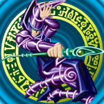

/@Danielxz22 - Se inscreve lá no meu canal do Youtube
/@Danielxz22 - Se inscreve lá no meu canal do Youtube
 /Em construção... - Me adiciona lá no Linkedin
/Em construção... - Me adiciona lá no Linkedin
 /Danielxz22 - Me acompanha lá no X (antigo Twitter)
/Danielxz22 - Me acompanha lá no X (antigo Twitter)

Sou uma pessoa movida pela curiosidade e pela busca da verdade. Desde pequeno, sempre quis compreender o mundo ao meu redor, entender como as coisas funcionam e descobrir o que existe além daquilo que já conheço.
Acredito que cada pessoa é única e que cada criação carrega um pouco da essência de quem a concebeu. Por isso, encontro nos jogos, animes, histórias e ideias muito mais do que entretenimento: encontro novas perspectivas, emoções e maneiras de enxergar a existência. Conhecer uma obra é, de certa forma, conhecer um pouco da alma de quem a criou e permitir que ela passe a fazer parte de mim.
Também sou alguém que busca compreender a humanidade, suas diferenças, suas contradições e aquilo que leva cada pessoa a pensar e agir como age. Não quero apenas acumular conhecimento, mas compreender o que aprendo e descobrir o que há de verdadeiro por trás das coisas.
Minha fé cristã faz parte dessa busca, pois, para mim, procurar a verdade é também procurar a Deus. Sei que meu tempo é limitado e que nunca poderei conhecer tudo o que gostaria, mas continuo movido pelo desejo de aprender, descobrir e expandir os limites do meu próprio mundo.
No fundo, sou alguém que deseja compreender o máximo possível da existência, conhecer a singularidade de cada pessoa e descobrir as verdades que dão sentido a tudo isso.
/@Danielxz22 - Se inscreve lá no meu canal do Youtube
/Em construção... - Me adiciona lá no Linkedin
/Danielxz22 - Me acompanha lá no X (antigo Twitter)